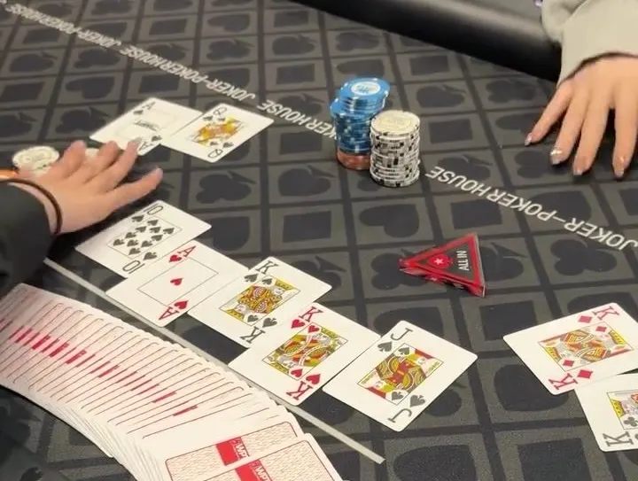

昼トナメ
土日・昼
- 開始
- 12:00
- 締切
- 14:30
- 参加費
- 1,000円
- 持ち点
- 20,000点
リエントリーもアドオンも、参加費は 1,000円です。

毎晩 19:00 からトーナメントを開いています。土日は、昼の 12:00 から始まる大会もあります。
2026年11月時点の例です。曜日や内容は変わることがあります。
土日・昼
リエントリーもアドオンも、参加費は 1,000円です。

水曜・夜
ポーカーを始めたばかりの方だけが参加できます。

火曜・夜
再エントリーとアドオンはありません。

木曜・夜
チーム対抗のリーグ戦（全8戦）。開催は2026年10〜12月です。
平日は、リングをメインに遊べる JOKER RINGDAY の日もあり、ブラックジャックやバカラもできます。
当店はアミューズメント施設です。賞品の提供・チップの換金・持ち出し・預かりはありません。
スケジュールに出てくる言葉の意味です。
日程や内容は週ごとに変わります。来る前に、ここで確かめてください。